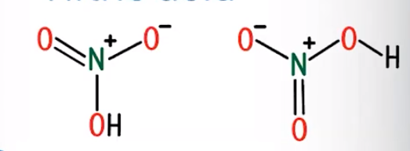
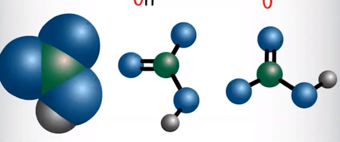
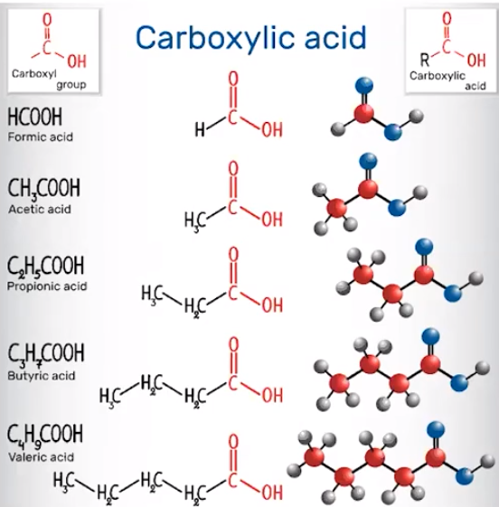

- Stronger acids have weak H-X bonds
- Have more stable conjugates (less likely to disassociate)
- HCl - bond between H and Cl is weak
- Weaker acids have strong H-X bonds
- Have less stable conjugates
- HF - bond between H and F is strong
```{=html}
<!-- -->
```
- Why?
- Weaker bonds => more disassociation
- H^+^ is pulled away more easily
<!-- -->
Oxoacids/oxyacids: an atom bonded with one or more oxygen atoms, sometimes with hydrogen atoms attached
Inductive Effect: the attraction of electrons in adjacent bonds by more electronegative atoms
Strong acids can experience an inductive effect
Due to highly electronegative oxygen atoms
{width="3.8020833333333335in" height="0.3541666666666667in"}
{width="3.625in" height="1.3333333333333333in"}
{width="4.71875in" height="1.96875in"}
Hydrogen is pulled away from OH
In this case, creates resonance structures as H^+^ is being pulled between nitrogen atoms
More electronegative atoms => electrons will be pulled away from hydrogen, making it more likely to disassociate
<!-- -->
{width="10.010416666666666in" height="0.6875in"}
Even charge => more stable (weaker)
Electronegative elements stabilize a conjugate base relative to its conjugate acid
<!-- -->
Weak acids, like carboxylic (COOH) acids, do not experience a strong induced dipole force
Less polarity => hydrogen ion more attracted to oxygen => less ionizable (harder to take away H^+^)
Conjugate bases are less stable, which results in them being stronger
Example: Acetate is a stronger conjugate base, which is less stable than acetic acid
{width="3.8229166666666665in" height="3.8854166666666665in"}
Bases
Stronger bases tend to attract protons
Two factors that influence a strength of a base:
How easily a lone pair picks up a hydrogen ion
The stability of the ions being formed
The conjugate bases of:
Carboxylic acids
Anions of other weak acids
Hydrated metal cations
All act as bases
Remember: larger Kb indicates a better proton acceptor
More negative charge => attracts protons